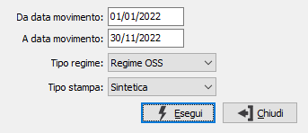

Prospetto Iva One-Stop-Shop
La procedura consenta di analizzare per periodo da data a data, i movimenti Iva riferiti a clienti privati (flag privato in anagrafica clienti spuntato) la cui nazione non sia Italia e sia membro UE, riportando per codice nazione, codice Iva, anno e mese il totale imponibile ed il totale imposta effettuando i totali per anno/trimestre, codice Iva e codice nazione.
La stampa analizza i movimenti Iva con data del movimento maggiore o uguale alla data di inizio adesione OSS/IOSS selezionata tramite il parametro “Tipo regime”, relativi ai clienti privati con un codice che abbia un regime OSS/IOSS coerente col tipo regime richiesto e non obsoleto e codice Iva che deve essere presente nella tabella Codici Iva per nazioni UE con un periodo che comprenda la data del documento; la selezione dei movimenti Iva avviene per un periodo da data, a data, obbligatori che vengono confrontati col campo data documento.
Il campo “Tipo regime” è attivo se sono attivi entrambi i regimi OSS, altrimenti viene preimpostato in automatico; se nessuno dei due regimi OSS è attivo non si potrà accedere al programma.
La stampa comprende due tipologie, sintetica ed analitica: la sintetica riporta i dati descritti in precedenza, eccetto il totale trimestrale per il regime IOSS; l’analitica riporta l’elenco dei documenti suddivisi per nazione e codice Iva della nazione, con totali per codice iva, nazione e generali.
